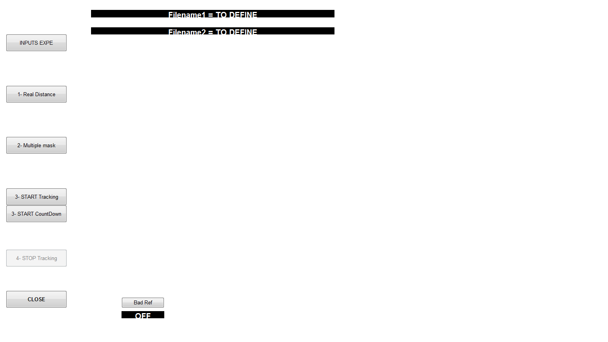

Contents
function [numF,filename]=DoubleOnlineTracking(~,~)
INPUTS
colori={'g','r','c'};
scrsz = get(0,'ScreenSize');
clear global name_folder1 name_folder2 tempLoad imageRef MatSum
clear global Ratio_IMAonREAL enableTrack
global vid
global tempLoad
global imageRef
global Ratio_IMAonREAL
global enableTrack
global BadRef
global intermed
global num_exp
global BW_threshold2;
global smaller_object_size2;
global shape_ratio2;
global n_AutoStop
global a
BadRef=0;
intermed=load('InfoTrackingTemp.mat');
imageRef=intermed.ref;
BW_threshold2=intermed.BW_threshold;
smaller_object_size2=intermed.smaller_object_size;
shape_ratio2=intermed.shape_ratio;
color_on = [ 0 0 0];
color_off = [1 1 1];
frame_rate = 10;
prefac0=0;
num_exp=0;
res=pwd;
if isempty(strfind(res,'/')),mark='\'; else mark='/';end
t=clock;
jour=num2str(t(3));if length(jour)==1, jour=cat(2,'0',jour);end
mois=num2str(t(2));if length(mois)==1, mois=cat(2,'0',mois);end
annee=num2str(t(1));
TodayIs=[jour mois annee];
graphical interface n�1 with all the pushbuttons
FigDouble=figure('units','normalized','position',[0.15 0.1 0.8 0.8],...
'numbertitle','off','name','Define Odor Locations','menubar','none','tag','figure Odor');
set(FigDouble,'Color',color_on);
figbutton(1)= uicontrol(FigDouble,'style','pushbutton',...
'units','normalized','position',[0.01 0.85 0.1 0.05],...
'string','INPUTS EXPE','callback', @giv_inputs);
figbutton(2)= uicontrol(FigDouble,'style','pushbutton',...
'units','normalized','position',[0.01 0.7 0.1 0.05],...
'string','1- Real Distance','callback', @Real_distance);
figbutton(3)= uicontrol(FigDouble,'style','pushbutton',...
'units','normalized','position',[0.01 0.55 0.1 0.05],...
'string','2- Multiple mask','callback', @Get_masks);
figbutton(4)= uicontrol(FigDouble,'style','pushbutton',...
'units','normalized','position',[0.01 0.4 0.1 0.05],...
'string','3- START Tracking','callback', @Track_Double);
figbutton(5)= uicontrol(FigDouble,'style','pushbutton',...
'units','normalized','position',[0.01 0.35 0.1 0.05],...
'string','3- START CountDown','callback', @Count_Down);
figbutton(6)= uicontrol(FigDouble,'style','pushbutton',...
'units','normalized','position',[0.2 0.1 0.07 0.03],...
'string','Bad Ref','callback', @RemoveRef);
figbutton(7)= uicontrol(FigDouble,'style','pushbutton',...
'units','normalized','position',[0.01 0.22 0.1 0.05],...
'string','4- STOP Tracking','callback', @stop_Phase);
set(figbutton(7),'enable','off')
figbutton(8)= uicontrol(FigDouble,'style','pushbutton',...
'units','normalized','position',[0.01 0.1 0.1 0.05],...
'string','CLOSE','callback', @quit);
set(figbutton(8),'enable','on','FontWeight','bold')
inputDisplay(1)=uicontrol(FigDouble,'style','text','units','normalized','position',[0.15 0.95 0.4 0.02],'string','Filename1 = TO DEFINE','FontSize',12);
inputDisplay(2)=uicontrol(FigDouble,'style','text','units','normalized','position',[0.15 0.9 0.4 0.02],'string','Filename2 = TO DEFINE','FontSize',12);
inputDisplay(3)=uicontrol(FigDouble,'style','text','units','normalized','position',[0.2 0.07 0.07 0.02],'string','OFF','FontSize',12);
for bi=1:3, set(inputDisplay(bi),'BackgroundColor',color_on,'ForegroundColor','w','FontWeight','bold');end

function to quit the programm
function quit(obj,event)
delete(FigDouble)
end
Ask for all inputs and display
function giv_inputs(obj,event)
try
temp=load('defaultinupts.mat','answer');
defAns=temp.answer;
catch
defAns={'BULB-','Mouse-158','Mouse-161','-Rest-tracking','5'};
end
prompt = {'pefixe','mouse 1','mouse 2','suffixe','CountDown (s)'};
dlg_title = 'Change parameters for double tracking:';
answer = inputdlg(prompt,dlg_title,1,defAns);
save('defaultinupts.mat','answer');
pefixe = answer{1};
name1 = answer{2};
name2 = answer{3};
suffixe = answer{4};
CDdur= str2num(answer{5});
set(inputDisplay(1),'string',['Mouse 1 = ',name1]);
set(inputDisplay(2),'string',['Mouse 2 = ',name2]);
set(figbutton(2),'enable','on','FontWeight','bold')
disp(' ');disp('-------------------- New Expe ---------------------');
try
save([res,mark,'TempDoubleTrack.mat'],'-append','pefixe','name1','name2','suffixe','imageRef','CDdur');
catch
save([res,mark,'TempDoubleTrack.mat'],'pefixe','name1','name2','suffixe','imageRef','CDdur');
end
end
Ask for all inputs and display
function Real_distance(obj,event)
figure(FigDouble), subplot(2,2,[1,3]),
imagesc(imageRef); colormap gray; axis image; axis ij
title('Click on two points to define a distance','Color','w')
for j=1:2
[x,y]=ginput(1);
hold on, plot(x,y,'+r')
x1(j)=x; y1(j)=y;
end
line(x1,y1,'Color','r','Linewidth',2)
answer = inputdlg({'Enter real distance (cm):'},'Define Real distance',1,{'30'});
text(mean(x1)+10,mean(y1)+10,[answer{1},' cm'],'Color','r')
d_xy=sqrt((diff(x1)^2+diff(y1)^2));
Ratio_IMAonREAL=d_xy/str2num(answer{1});
title(' do 2-')
hold on, line([10 20]*Ratio_IMAonREAL,[10 10],'Color','k','Linewidth',3)
text(15*Ratio_IMAonREAL,15,'10 cm','Color','k')
set(figbutton(3),'enable','on','FontWeight','bold')
set(figbutton(2),'FontWeight','normal')
Ratio_IMAonREAL=Ratio_IMAonREAL;
save([res,mark,'TempDoubleTrack.mat'],'-append','Ratio_IMAonREAL');
end
Ask for 2 masks
function Get_masks(obj,event)
set(figbutton(3),'FontWeight','normal')
set(figbutton(4),'enable','on','FontWeight','bold')
set(figbutton(5),'enable','on','FontWeight','bold')
Mref=single(imageRef);
Mmask=single(ones(size(imageRef)));
ref2=Mref;
color_on = [ 0 0 0];
graphical interface n�3
mask_fig=figure('units','normalized',...
'position',[0.15 0.1 0.8 0.8],...
'numbertitle','off',...
'name','Online Mouse Tracking : Setting Parameters',...
'menubar','none',...
'tag','figure mask');
set(mask_fig,'Color',color_on);
uicontrol(mask_fig,'style','text', ...
'units','normalized',...
'position',[0.25 0.02 0.06 0.03],...
'string','click on maze edges');
uicontrol(mask_fig,'style','text', ...
'units','normalized',...
'position',[0.70 0.02 0.06 0.03],...
'string','satisfied?');
maskbutton(1)= uicontrol(mask_fig,'style','pushbutton',...
'units','normalized',...
'position',[0.01 0.75 0.08 0.05],...
'string','Circle',...
'callback', @Option_Circle);
maskbutton(2)= uicontrol(mask_fig,'style','pushbutton',...
'units','normalized',...
'position',[0.01 0.09 0.08 0.05],...
'string','close',...
'callback', @close_maskfig);
maskbutton(3)=uicontrol(mask_fig,'style','pushbutton',...
'units','normalized',...
'position',[0.01 0.68 0.08 0.05],...
'string','mask IN',...
'callback', @Do_maskIN);
maskbutton(4)= uicontrol(mask_fig,'style','pushbutton',...
'units','normalized',...
'position',[0.01 0.9 0.08 0.05],...
'string','Reset mask',...
'callback', @Reset_mask);
maskbutton(5)=uicontrol(mask_fig,'style','pushbutton',...
'units','normalized',...
'position',[0.01 0.61 0.08 0.05],...
'string','mask OUT',...
'callback', @Do_maskOUT);
maskbutton(6)= uicontrol(mask_fig,'style','pushbutton',...
'units','normalized',...
'position',[0.01 0.27 0.08 0.05],...
'string','save mask 1',...
'callback', @save_mask1);
maskbutton(7)= uicontrol(mask_fig,'style','pushbutton',...
'units','normalized',...
'position',[0.01 0.2 0.08 0.05],...
'string','save mask 2',...
'callback', @save_mask2);
maskbutton(8)= uicontrol(mask_fig,'style','pushbutton',...
'units','normalized',...
'position',[0.01 0.44 0.08 0.05],...
'string','Loadmask',...
'callback', @Loadmask);
maskbutton(9)= uicontrol(mask_fig,'style','pushbutton',...
'units','normalized',...
'position',[0.01 0.37 0.08 0.05],...
'string','savemaskfile',...
'callback', @savemaskfile);
figure(mask_fig),colormap gray
subplot(1,2,1), imagesc(Mref),axis image; axis ij
Docircle=0; title('rectligne shape','Color','w')
function Loadmask(obj,event)
filenamemask=uigetfile('getmask');
tempmask=load(filenamemask);
try Mmask=uint8(double(tempmask.Mmask));end
ref2((find(Mmask==0)))=0;
figure(mask_fig), subplot(1,2,2)
imagesc(ref2),axis image; axis ij
end
function savemaskfile(obj,event)
answermask = inputdlg('Name','Enter name to save mask in path',1,{'maskPeriphery'});
answermask=answermask{1};
save(answermask,'Mmask');
end
function Do_maskIN(obj,event)
for var_boucle=1:5
set(maskbutton(var_boucle),'Enable','off')
end
figure(mask_fig), subplot(1,2,1),axis image; axis ij
if Docircle
h = imellipse;
BW = createMask(h);
else
[x1,y1,BW,y2]=roipoly(Mref./max(max(Mref)));
end
maskint=uint8(BW);
maskint=uint8(-(double(maskint)-1));
try Mmask=uint8(double(Mmask).*double(maskint)); catch,keyboard;end
colormap gray
ref2((find(Mmask==0)))=0;
figure(mask_fig), subplot(1,2,2)
imagesc(ref2),axis image; axis ij
for var_boucle=1:5
set(maskbutton(var_boucle),'Enable','on')
end
end
function Do_maskOUT(obj,event)
for var_boucle=1:5
set(maskbutton(var_boucle),'Enable','off')
end
figure(mask_fig), subplot(1,2,1), hold off
if Docircle
h = imellipse;
BW = createMask(h);
else
[x1,y1,BW,y2]=roipoly(Mref./max(max(Mref)));
end
maskint=uint8(BW);
Mmask=uint8(double(Mmask).*double(maskint));
colormap gray
ref2((find(Mmask==0)))=0;
figure(mask_fig), subplot(1,2,2)
imagesc(ref2),axis image; axis ij
for var_boucle=1:5
set(maskbutton(var_boucle),'Enable','on')
end
end
function Option_Circle(obj,event)
if Docircle
Docircle=0;
subplot(1,2,1), title('rectligne shape','Color','w')
else
Docircle=1;
subplot(1,2,1), title('CIRCLE ACITVATED','Color','w')
end
end
function Reset_mask(obj,event)
figure(mask_fig),colormap gray
subplot(1,2,1), imagesc(Mref),axis image; axis ij
Docircle=0; title('rectligne shape','Color','w')
Mmask=ones(size(ref2,1),size(ref2,2));
ref2=Mref;
subplot(122), imagesc(ref2), axis image; axis ij
end
function save_mask1(obj,event)
mask1=single(Mmask);
save('TempDoubleTrack.mat','mask1','-append');
disp('mask 1 saved');
msg_box=msgbox('Mask 1 saved','save','modal');
pause(0.4); close(msg_box);
Reset_mask;
end
function save_mask2(obj,event)
mask2=single(Mmask);
save('TempDoubleTrack.mat','mask2','-append');
disp('mask 2 saved');
msg_box=msgbox('Mask 2 saved','save','modal');
pause(0.4); close(msg_box);
Reset_mask;
end
function close_maskfig(obj,event)
delete(mask_fig)
end
end
track mouse
function Track_Double(obj,event)
disp(' Begining tracking...')
guireg_fig=OnlineGuiReglage;
num_exp=num_exp+1;
for bit=[1:5,8]
set(figbutton(bit),'enable','off','FontWeight','normal')
end
set(figbutton(7),'enable','on','FontWeight','bold')
enableTrack=1;
fwrite(a,7);
tempLoad=load([res,mark,'TempDoubleTrack.mat']);
imageRef=tempLoad.imageRef;
Ratio_IMAonREAL=tempLoad.Ratio_IMAonREAL;
mask1=tempLoad.mask1;
mask2=tempLoad.mask2;
prefac=num2str(num_exp);
if length(prefac)==1, prefac=['0',prefac];end
name_folder1=[tempLoad.pefixe,tempLoad.name1,'-',TodayIs,'-',prefac,tempLoad.suffixe];
name_folder2=[tempLoad.pefixe,tempLoad.name2,'-',TodayIs,'-',prefac,tempLoad.suffixe];
while exist([res,mark,name_folder1],'dir'), name_folder1=[name_folder1,'0'];end
while exist([res,mark,name_folder2],'dir'), name_folder2=[name_folder2,'0'];end
mkdir([res,mark,name_folder1]);
mkdir([res,mark,name_folder2]);
set(inputDisplay(1),'string',name_folder1,'FontSize',12);
set(inputDisplay(2),'string',name_folder2,'FontSize',12);
figure(FigDouble), colormap gray; subplot(2,2,[1,3]),hold on,
htrack = imagesc(imageRef);axis image; axis ij
line([10 20]*Ratio_IMAonREAL,[10 10],'Color','k','Linewidth',3)
text(15*Ratio_IMAonREAL,15,'10 cm','Color','k')
title('ACQUISITION ON')
g=plot(0,0,'m+');
g2=plot(0,0,'g+');
figure(FigDouble), subplot(2,2,2), hold off
htrack2 = imagesc(zeros(size((imageRef))));axis image;caxis([0 1])
title('tracking mouse 1','Color','w'); axis ij
figure(FigDouble), subplot(2,2,4), hold off
htrack3 = imagesc(zeros(size((imageRef))));axis image;caxis([0 1])
title('tracking mouse 2','Color','w'); axis ij
chronoshow=uicontrol('style','edit', 'units','normalized','position',[0.065 0.26 0.04 0.05],...
'string',num2str(floor(0)),'ForegroundColor','g','BackgroundColor','k');
time_image = 1/frame_rate;
num_fr=1;
tDeb = clock;
timeDeb = tDeb(4)*60*60+tDeb(5)*60+tDeb(6);
PosMat1=[];PosMat2=[];
while enableTrack
t1 = clock;
chrono=(t1(4)*60*60+t1(5)*60+t1(6))-timeDeb;
set(chronoshow,'string',num2str(floor(chrono)));
IM=getsnapshot(vid);
set(htrack,'Cdata',double(IM));
if BadRef, subimage = abs(double(IM)-max(max(double(IM)))); else, subimage = imageRef-IM ;end
subimage1 = uint8(double(subimage).*double(mask1));
diff_im = im2bw(subimage1,BW_threshold2);
diff_im = bwareaopen(diff_im,smaller_object_size2);
try MovIM1=(diff_im-tempIM1); catch, MovIM1=single(zeros(size(diff_im)));end
tempIM1=diff_im;
immob_val1(num_fr)=sqrt(sum(sum(((MovIM1).*(MovIM1)))))/12000/2*100;
bw = logical(diff_im);
stats = regionprops( bw, 'Centroid','MajorAxisLength','MinorAxisLength');
centroids = cat(1, stats.Centroid);
maj = cat(1, stats.MajorAxisLength);
mini = cat(1, stats.MinorAxisLength);
rap=maj./mini;
centroids=centroids(rap<shape_ratio2,:);
set(htrack2,'Cdata',bw);
if size(centroids) == [1 2]
set(g,'Xdata',centroids(1),'YData',centroids(2))
PosMat1(num_fr,1)=chrono;
PosMat1(num_fr,2)=centroids(1);
PosMat1(num_fr,3)=centroids(2);
PosMat1(num_fr,4)=NaN;
else
set(g,'Xdata',0,'YData',0)
PosMat1(num_fr,:)=[chrono;NaN;NaN;NaN];
end
if rem(num_fr,200)==0
fwrite(a,5);
PosMat1(num_fr,4)=1;
end
subimage2 = uint8(double(subimage).*double(mask2));
diff_im = im2bw(subimage2,BW_threshold2);
diff_im = bwareaopen(diff_im,smaller_object_size2);
try MovIM2=(diff_im-tempIM2); catch, MovIM2=single(zeros(size(diff_im)));end
tempIM2=diff_im;
immob_val2(num_fr)=sqrt(sum(sum(((MovIM2).*(MovIM2)))))/12000/2*100;
bw = logical(diff_im);
stats = regionprops( bw, 'Centroid','MajorAxisLength','MinorAxisLength');
centroids = cat(1, stats.Centroid);
maj = cat(1, stats.MajorAxisLength);
mini = cat(1, stats.MinorAxisLength);
rap=maj./mini;
centroids=centroids(rap<shape_ratio2,:);
set(htrack3,'Cdata',bw);
if size(centroids) == [1 2]
set(g2,'Xdata',centroids(1),'YData',centroids(2))
PosMat2(num_fr,1)=chrono;
PosMat2(num_fr,2)=centroids(1);
PosMat2(num_fr,3)=centroids(2);
PosMat2(num_fr,4)=NaN;
else
set(g2,'Xdata',0,'YData',0)
PosMat2(num_fr,:)=[chrono;NaN;NaN;NaN];
end
if rem(num_fr,200)==0
fwrite(a,5);
PosMat2(num_fr,4)=1;
end
num_fr=num_fr+1;
t2 = clock;
if ~isempty(n_AutoStop) && (etime(t2,tDeb)> n_AutoStop+0.99)
stop_Phase;
end
pause(time_image-etime(t2,t1));
end
for bit=[1:5,8]
set(figbutton(bit),'enable','on','FontWeight','bold')
end
set(figbutton(7),'enable','off','FontWeight','normal')
msg_box=msgbox('Saving both PosMat in .mat and .pos','save','modal');
try
PosMat=PosMat1; ref=imageRef; mask=mask1;
timeImposed=[min(PosMat(:,1)):1/15:max(PosMat(:,1))];
disp(['... Saving ',name_folder1,'.mat']); indexpos=find(~isnan(PosMat(:,2)));
try
Pos=[timeImposed',interp1(PosMat(indexpos,1),PosMat(indexpos,2:3),timeImposed)];
catch
disp('ATTENTION !!!!! Pos mouse 1 is composed of NaN only!');
Pos=[timeImposed',nan(length(timeImposed),2)];
end
pause(0.1)
Movtsd=tsd(PosMat1(:,1)*1E4',SmoothDec(immob_val1',1));
save([res,mark,name_folder1],'Pos','PosMat','Movtsd','ref','mask','shape_ratio2','BW_threshold2','smaller_object_size2','frame_rate','Ratio_IMAonREAL');
save([res,mark,'TempDoubleTrack.mat'],'-append','PosMat')
pause(0.5)
save([res,mark,name_folder1,mark,'PosMat.mat'],'PosMat','PosMat1');
try copyfile([res,mark,'TempDoubleTrack.mat'],[name_folder1,mark,'DoubleTrack.mat']); catch; keyboard;end
catch
disp('Problem saving mouse 1...');
keyboard;
end
try
PosMat=PosMat2; ref=imageRef; mask=mask2;
timeImposed=[min(PosMat(:,1)):1/15:max(PosMat(:,1))];
disp(['... Saving ',name_folder2,'.mat']); indexpos=find(~isnan(PosMat(:,2)));
try
Pos=[timeImposed',interp1(PosMat(indexpos,1),PosMat(indexpos,2:3),timeImposed)];
catch
disp('ATTENTION !!!!! Pos mouse 2 is composed of NaN only!');
Pos=[timeImposed',nan(length(timeImposed),2)];
end
Movtsd=tsd(PosMat2(:,1)*1E4',SmoothDec(immob_val2',1));
save(name_folder2,'Pos','PosMat','Movtsd','ref','mask','shape_ratio2','BW_threshold2','smaller_object_size2','frame_rate','Ratio_IMAonREAL');
save([res,mark,'TempDoubleTrack.mat'],'-append','PosMat')
pause(0.5)
save([res,mark,name_folder2,mark,'PosMat.mat'],'PosMat','PosMat2');
try copyfile([res,mark,'TempDoubleTrack.mat'],[name_folder2,mark,'DoubleTrack.mat']); catch; keyboard;end
disp('... Generating files.pos');
file1 = fopen([res,mark,name_folder1,'.pos'],'w');
file2 = fopen([res,mark,name_folder2,'.pos'],'w');
for pp = 1:length(PosMat1)
fprintf(file1,'%f\t',PosMat1(pp,2)); fprintf(file1,'%f\n',PosMat1(pp,3));
fprintf(file2,'%f\t',PosMat2(pp,2)); fprintf(file2,'%f\n',PosMat2(pp,3));
end
disp('Done')
catch
disp('Problem saving mouse 2...');
keyboard;
end
close(msg_box)
close(guireg_fig)
for bit=[1:5,8]
set(figbutton(bit),'enable','on','FontWeight','bold')
end
set(figbutton(7),'enable','off','FontWeight','normal')
subplot(2,2,2), hold off, imagesc(imageRef),axis image; axis ij,
hold on, plot(PosMat1(:,2),PosMat1(:,3),'m'); title(name_folder1)
hold on, plot(PosMat2(:,2),PosMat2(:,3),'g'); xlabel(name_folder2);
subplot(2,2,4), plot(PosMat1(:,1),SmoothDec(immob_val1',1),'m'); title('Movtsd'); xlabel('Time (s)')
hold on, plot(PosMat2(:,1),SmoothDec(immob_val2',1),'g');
legend({tempLoad.name1,tempLoad.name2});
end
Count_Down before Track_sniff
function Count_Down(obj,event)
templ=load([res,mark,'TempDoubleTrack.mat'],'CDdur');
CDdur=templ.CDdur;
chronoshow=uicontrol('style','edit', 'units','normalized','position',[0.065 0.26 0.04 0.05],...
'string',num2str(floor(0)),'ForegroundColor','g','BackgroundColor','k');
tdeb = clock;
t1 = clock;
while etime(t1,tdeb)< CDdur
t1 = clock;
set(chronoshow,'string',num2str(CDdur-floor(etime(t1,tdeb))));
pause(0.5)
end
Track_Double;
end
RemoveRef
function RemoveRef(obj,event)
BadRef=abs(BadRef-1); pause(0.005);
if BadRef
set(inputDisplay(3),'string','ON');
else
set(inputDisplay(3),'string','OFF');
end
end
stop tracking
function stop_Phase(obj,event)
fwrite(a,7);
pause(0.05)
figure(FigDouble), subplot(2,2,[1 3]), title('ACQUISITION STOPPED')
enableTrack=0;
end
OnlineGuiReglage
function guireg_fig=OnlineGuiReglage(obj,event);
if ~exist('typical_size','var'), typical_size=300;end
typical_rapport=10;
guireg_fig=figure('units','normalized',...
'position',[0.1 0.1 0.15 0.6],...
'numbertitle','off',...
'name','Online Mouse Tracking : Setting Parameters',...
'menubar','none',...
'tag','figure reglage');
set(guireg_fig,'Color',color_on);
hand(2)=uicontrol(guireg_fig,'style','pushbutton',...
'units','normalized',...
'position',[0.01 0.9 0.8 0.05],...
'string','Stop for Manual Inputs',...
'tag','init',...
'callback', @enterManual);
text1=uicontrol(guireg_fig,'style','text', ...
'units','normalized',...
'position',[0.05 0.85 0.25 0.03],...
'string','seuil couleur');
text2=uicontrol(guireg_fig,'style','text', ...
'units','normalized',...
'position',[0.4 0.85 0.25 0.03],...
'string','seuil objets');
text3=uicontrol(guireg_fig,'style','text', ...
'units','normalized',...
'position',[0.7 0.85 0.25 0.03],...
'string','rapport axes');
slider_seuil = uicontrol(guireg_fig,'style','slider',...
'units','normalized',...
'position',[0.05 0.1 0.15 0.7],...
'callback', @seuil);
set(slider_seuil,'Value',BW_threshold2);
slider_small=uicontrol(guireg_fig,'style','slider',...
'units','normalized',...
'position',[0.4 0.1 0.15 0.7],...
'callback', @elimination);
set(slider_small,'Value',smaller_object_size2/typical_size);
slider_rapport = uicontrol(guireg_fig,'style','slider',...
'units','normalized',...
'position',[0.7 0.1 0.15 0.7],...
'callback', @rapport);
set(slider_rapport,'Value',shape_ratio2/typical_rapport);
text5=uicontrol(guireg_fig,'style','text', ...
'units','normalized',...
'position',[0.05 0.05 0.25 0.03],...
'string',num2str(BW_threshold2));
text6=uicontrol(guireg_fig,'style','text', ...
'units','normalized',...
'position',[0.4 0.05 0.25 0.03],...
'string',num2str(smaller_object_size2));
text4=uicontrol(guireg_fig,'style','text', ...
'units','normalized',...
'position',[0.7 0.05 0.25 0.03],...
'string',num2str(shape_ratio2));
function seuil(obj,event)
BW_threshold2 = get(slider_seuil, 'value');
set(text5,'string',num2str(BW_threshold2))
disp([' New BW_threshold=',num2str(BW_threshold2)])
end
function elimination(obj,event)
smaller_object_size2 = round(get(slider_small,'value')*typical_size);
set(text6,'string',num2str(smaller_object_size2))
disp([' New smaller_object_size=',num2str(smaller_object_size2)])
end
function rapport(obj,event)
shape_ratio2 = (get(slider_rapport,'value')*typical_rapport);
set(text4,'string',num2str(shape_ratio2))
disp([' New shape_ratio=',num2str(shape_ratio2)])
end
function enterManual(obj,event)
defAns={num2str(BW_threshold2) num2str(smaller_object_size2) num2str(shape_ratio2)};
prompt = {'BW_threshold','smaller_object_size','shape_ratio'};
dlg_title = 'Change parameters for offline tracking:';
answer = inputdlg(prompt,dlg_title,1,defAns);
BW_threshold2=str2num(answer{1});
smaller_object_size2=str2num(answer{2});
shape_ratio2=str2num(answer{3});
set(slider_seuil,'Value',BW_threshold2);
set(slider_small,'Value',smaller_object_size2/typical_size);
set(slider_rapport,'Value',shape_ratio2/typical_rapport);
end
end
end